Keywords
- Ada Boosting
- Apriori
- Association Rule Learning
- Bagging and Pasting
- Batch Gradient Descent
- Batch Learning
- Bias
- Boosting
- Clustering
- Confusion matrix
- Cost function
- Cross-Validation
- Decision Tree
- Random Forests
- Eclat
- Elastic Net
- Ensemble Learning
- Expectation Minimization
- Explained Variance Ratio
- F1 score
- Feature Engineering
- Feature Scaling
- Fitness Function
- Generalization Error
- Gradient Boosting
- Gradient Descent
- Hierarical Cluster Analyses (HCA)
- Incremental PCA
- Instance Based Learning
- Irreducible Error
- k-Means
- k-Nearest Neighbors
- Kernel PCA
- Lasso Regression
- Learning curve
- Linear Regression
- Locally Linear Embedding (LLE)
- Logistic Regression
- Model Based Learning
- Multiclass Classification
- Multilabel Classification
- Multioutput Classification
- Neural Networks
- Normalization (i.e., min-max scaling)
- Offlline Learning
- Overfitting
- Polynomial Kernel
- Precision
- Principal Component Analysis (PCA)
- Random Forests
- Recall
- Reinforcement Learning
- Ridge Regression
- ROC Curve
- Semisupervised learning
- Simulated Annealing
- Softmax Regression
- Standardization
- Stochastic Gradient Descent (SGD)
- Stratified Sampling
- Supervised learning
- Support Vector Machines (SVMs)
- t-distributed Stochastic Neighbor Embedding (t-SNE)
- Testing Data
- The Curse of Dimensionality
- Training Data
- Underfitting
- Unsupervised Learning
- Utility function
- Variance
- Dimensionality Reduction
Supervised Learning
In Supervised Learning the training data you feed to the algorithm includes desired solutions, called labels.
Supervised Learning Algorithms
- k-Nearest Neighbors
- Linear Regression
- Logistic Regression
- Support Vector Machines (SVMs)
- Decision Trees and Random Forests
- Neural networks
Semisupervised learning
Data is partially labeled
Unsupervised Learning
In Unsupervised Learning the training data is unlabeled.
Unsupervised Learning Algorithms
Clustering
- k-Means
- Hierarical Cluster Analyses (HCA)
- Expectation Minimization
Visualization and dimensionality reduction
- Principal Componen Analysis (PCA)
- Kernel PCA
- Locally-Linear Embedding (LLE)
- t-distributed Stochastic Neighbor Embedding (t-SNE)
Association rule learning
- Apriori
- Eclat
Association rule learning: goal is to dig into large amounts of data and discover interesting relations between attributes.
Dimensionality reduction: goal is to simplify the data without losing too much information.
Clustering algorithm: tries to detect groups of similar instances.
Reinforcement Learning
The learning system, called an agent in this context, can observe the environment, select and perform actions, and get rewards in return (or penalties in the form of negative rewards). It must then learn by itself what is the best strategy, called a policy, to get the most reward over time.
Batch learning-Offlline learning
The system is incapable of learning incrementally: it must be trained using all the available data. This will generally take a lot of time and computing resources, so it is typically done offline. First the system is trained, and then it is launched into production and runs without learning anymore, it just applies what it has learned. This is called offlline learning.
Online learning
You train the system incrementally by feeding it data instances sequentially, either individually or by small groups called mini-batches. Each learning step is fast and cheap, so the system can learn about new data on the fly, as it arrives. One important parameter of online learning systems is how fast they should adapt to changing data: this is called the learning rate. If you set a high learning rate, then your system will rapidly adapt to new data, but it will also tend to quickly forget the old data.
Instance Based Learning
The system learns the examples by heart, then generalizes the new instances using a similarity measure.
Model Based Learning
The system builds model of data. Model is used to make prediction on new instances.
Utility function (or fitness function)
Measures how good the model is, and cost function measures how bad it is.
Main Challenges of Machine Learning
- Insufficient Quantity of Training Data
- Nonrepresentative Training Data
- Poor-Quality Data : Training data is full of errors
Overfitting
Means that the model performs well on the training data, but it does not generalize well.
Underfitting
Underfitting is the opposite of overfitting: it occurs when your model is too simple to learn the underlying structure of the data.
Feature engineering
- Feature selection: selecting the most useful features to train on among existing features.
- Feature extraction: combining existing features to produce a more useful one (as we saw earlier, dimensionality reduction algorithms can help)
- Creating new features by gathering new data.
Training-Testing data
Model is trained using the training set, and tested using the test set. The error rate on new cases is called the generalization error (or out-of- sample error).
Cross-validation
In cross-validation: the training set is split into complementary subsets, and each model is trained against a different combination of these subsets and validated against the remaining parts.
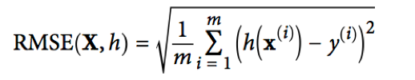
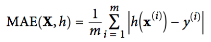
Stratified Sampling
The population is divided into homogeneous subgroups called strata, and the right number of instances is sampled from each stratum to guarantee that the test set is representative of the overall population.
Feature Scaling
There are two common ways to get all attributes to have the same scale: min-max scaling and standardization
Min-max scaling (i.e. normalization)
Values are shifted and rescaled so that they end up ranging from 0 to 1. We do this by subtracting the min value and dividing by the max minus the min.
Standardization
Standardization first subtracts the mean value (so standardized values always have a zero mean), and then it divides by the variance so that the resulting distribution has unit variance. Unlike min-max scaling, standardization does not bound values to a specific range, which may be a problem for some algorithms (e.g., neural networks often expect an input value ranging from 0 to 1). However, standardization is much less affected by outliers.
Stochastic Gradient Descent (SGD) classifier
SGD deals with training instances independently, one at a time (which also makes SGD well suited for online learning). The SGDClassifier relies on randomness during training (hence the name “stochastic”). If you want reproducible results, you should set the random_state parameter.
Confusion matrix
The general idea is to count the number of times instances of class A are classified as class B.
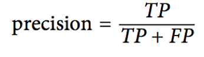
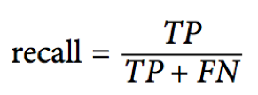
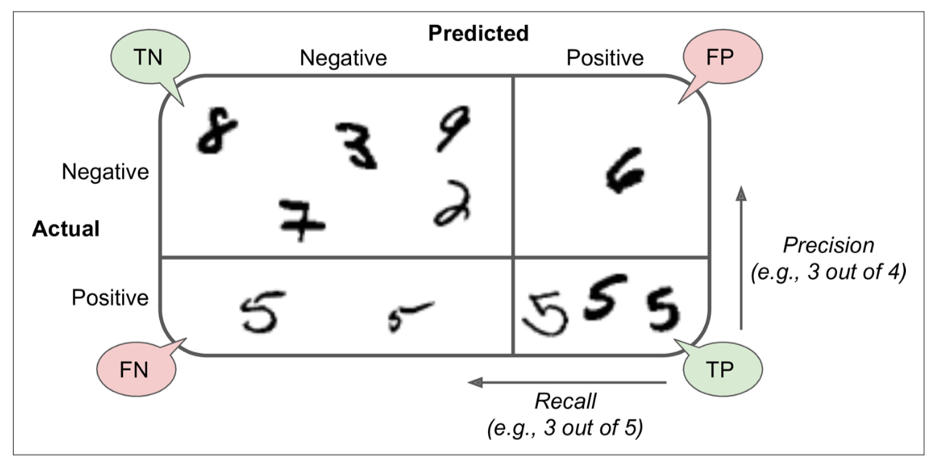
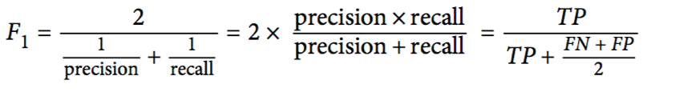
F1 score
F1 score is the harmonic mean of precision and recall. The F1 score favors classifiers that have similar precision and recall.
ROC curve
The receiver operating characteristic (ROC) curve plots the true positive rate (another name for recall) against the false positive rate. The FPR is the ratio of negative instances that are incorrectly classified as positive. It is equal to one minus the true negative rate, which is the ratio of negative instances that are correctly classified as negative.
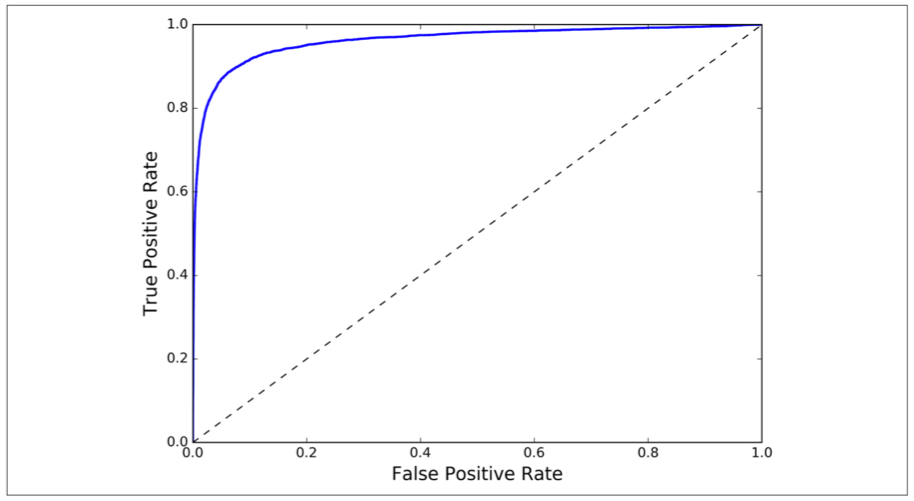
Multiclass Classification
Multiclass classifiers can distinguish between more than two classes.
Multilabel Classification
Say the classifier has been trained to recognize three faces in a picture, Alice, Bob, and Charlie; then when it is shown a picture of Alice and Charlie, it should output [1, 0, 1] (meaning “Alice yes, Bob no, Charlie yes”). Such a classification system that outputs multiple binary labels is called a multilabel classification system.
Multioutput Classification
Multioutput Classification is simply a generalization of multilabel classification where each label can be multiclass (i.e., it can have more than two possible values).
Linear Regression
Linear model makes a prediction by simply computing a weighted sum of the input features, plus a constant called the bias term (also called the intercept term)
Linear Regression model prediction y = θ0 +θ1x1 +θ2x2 + ... +θnxn
- y: is the predicted value.
- n: is the number of features.
- xi: is the ith feature value.
- θj is the jth model parameter.
Gradient Descent
Idea of Gradient Descent is to tweak parameters iteratively in order to minimize a cost function. An important parameter in Gradient Descent is the size of the steps, determined by the learning rate hyperparameter. If the learning rate is too small, then the algorithm will have to go through many iterations to converge, which will take a long time. When using Gradient Descent, you should ensure that all features have a similar scale or else it will take much longer to converge. The more parameters a model has, the more dimensions this space has, and the harder the search is.
In Gradient Descent, calculations done at each step over the entire dataset this is called Batch Gradient Descent. It is terribly slow. Stochastic Gradient Descent just picks a random instance in the training set at every step and computes the gradients based only on that single instance. Mini-batch GD computes the gradients on small random sets of instances called mini-batches.
One solution to this dilemma is to gradually reduce the learning rate. The steps start out large (which helps make quick progress and escape local minima), then get smaller and smaller, allowing the algorithm to settle at the global minimum. This process is called Simulated Annealing.
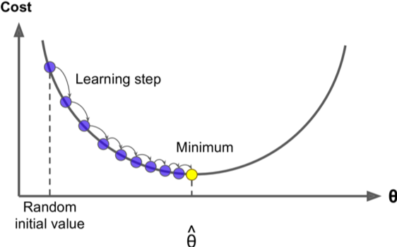
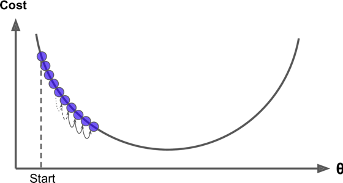
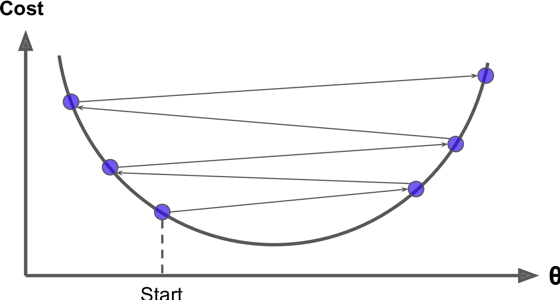
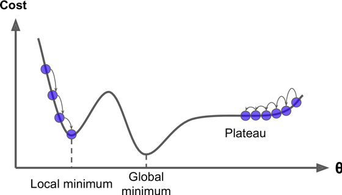
Polynomial Regression
If data is actually more complex than a simple straight line, we can actually use a linear model to fit nonlinear data. A simple way to do this is to add powers of each feature as new features, then train a linear model on this extended set of features. This technique is called Polynomial Regression. Polynomial Regression model is severely overfitting the training data, while the linear model is underfitting it.
Learning curves are plots of the model’s performance on the training set and the validation set as a function of the training set size.
High-degree Polynomial Regression.
Polynomial Regression model predictions.
Bias
A high-bias model is most likely to underfit the training data.
Variance
Model is excessive sensitivity to small variations in the training data. A model with many degrees of freedom (such as a high-degree polynomial model) is likely to have high variance, and thus to overfit the training data.
Irreducible error
Irreducible error is due to the noisiness of the data itself. The only way to reduce the error is to clean up the data (e.g., fix the data sources, such as broken sensors, or detect and remove outliers).
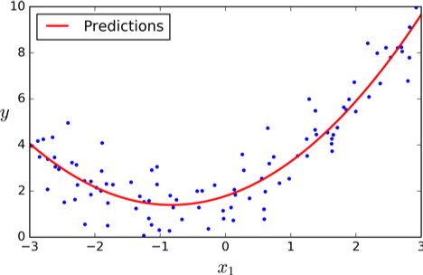
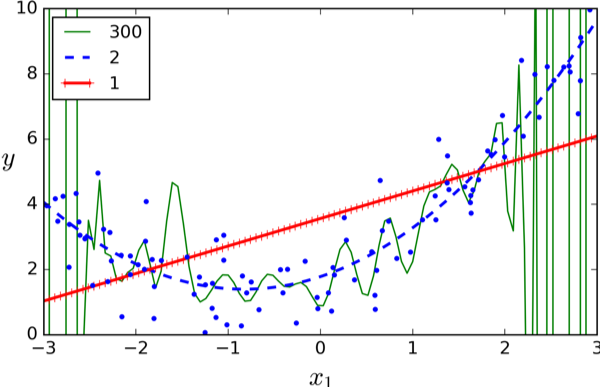
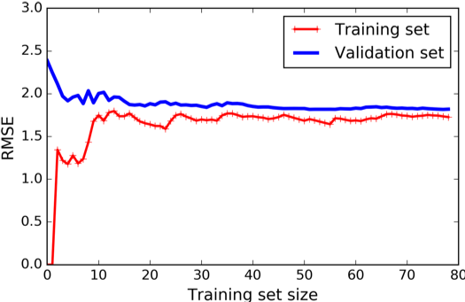
Ridge Regression and Lasso Regression is version of Linear Regression
Regularized Linear Models
Regularizing the model is used to reduce overfitting (i.e., to constrain it) For example, a simple way to regularize a polynomial model is to reduce the number of polynomial degrees.
Ridge Regression (also called Tikhonov regularization) forces the learning algorithm to not only fit the data but also keep the model weights as small as possible. The hyperparameter α controls how much you want to regularize the model. If α = 0 then Ridge Regression is just Linear Regression. If α is very large, then all weights end up very close to zero and the result is a flat line going through the data’s mean. Ridge Regression is sensitive scale of the input features thus, data should be scaled before applying Ridge Regression.
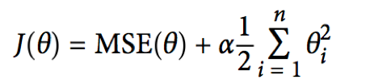
Lasso Regression
Lasso Regression adds a regularization term to the cost function, but it uses the l1 norm of the weight vector instead of half the square of the l2 norm. Lasso Regression is that it tends to completely eliminate the weights of the least important features (i.e., set them to zero) Lasso Regression automatically performs feature selection and outputs a sparse model (i.e., with few nonzero feature weights).
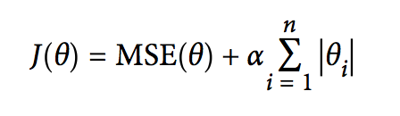
Elastic Net
Elastic Net is a middle ground between Ridge Regression and Lasso Regression. The regularization term is a simple mix of both Ridge and Lasso’s regularization terms, and you can control the mix ratio r. When r = 0, Elastic Net is equivalent to Ridge Regression, and when r = 1, it is equivalent to Lasso Regression
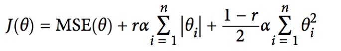
Logistic Regression
Logistic Regression (also called Logit Regression) is commonly used to estimate the probability that an instance belongs to a particular class (e.g., what is the probability that this email is spam?). If the estimated probability is greater than 50%, then the model predicts that the instance belongs to that class (called the positive class, labeled “1”), or else it predicts that it does not (i.e., it belongs to the negative class, labeled “0”). This makes it a binary classifier.
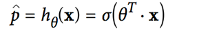
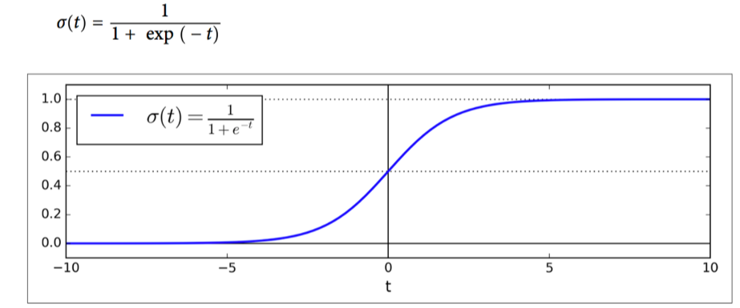
Softmax Regression
The Logistic Regression model can be generalized to support multiple classes directly, without having to train and combine multiple binary classifiers. This is called Softmax Regression, or Multinomial Logistic Regression. The idea is quite simple: when given an instance x, the Softmax Regression model first computes a score sk(x) for each class k, then estimates the probability of each class by applying the so max function (also called the normalized exponential) to the scores. The equation to compute sk(x) should look familiar, as it is just like the equation for Linear Regression prediction. Note that each class has its own dedicated parameter vector θk. All these vectors are typically stored as rows in a parameter matrix Θ.
Softmax score for class k
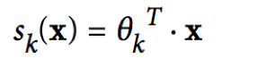
Once you have computed the score of every class for the instance x, you can estimate the probability p
k that the instance belongs to class k by running the scores through function below.
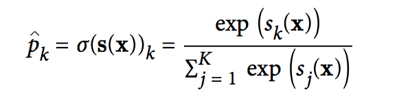
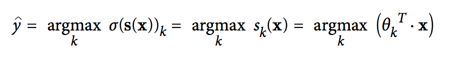
Softmax Regression classifier prediction
K is the number of classes.
• s(x) is a vector containing the scores of each class for the instance x.
• σ(s(x))k is the estimated probability that the instance x belongs to class k given the scores of each class for that instance.
Just like the Logistic Regression classifier, the Softmax Regression classifier predicts the class with the highest estimated probability (which is simply the class with the highest score).
The argmax operator returns the value of a variable that maximizes a function. In this equation, it returns the value of k that maximizes the estimated probability σ(s(x))k.
Support Vector Machines (SVM)
Support Vector Machines is like fitting the widest possible street (represented by the parallel dashed lines) between the classes. This is called large margin classification. Notice that adding more training instances “off the street” will not affect the decision boundary at all: it is fully determined (or “supported”) by the instances located on the edge of the street. Unlike Logistic Regression classifiers, SVM classifiers do not output probabilities for each class.
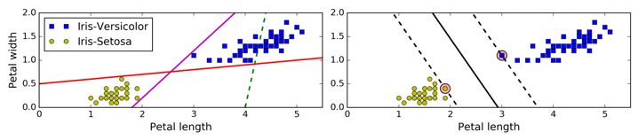
Polynomial Kernel
High polynomial degree creates huge number of features and makes any machine learning model too slow but we can apply kernel trick.
Adding features to make a dataset linearly separable.
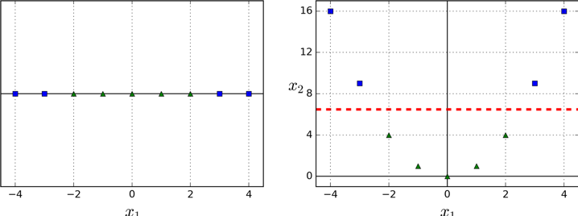
SVM Regression
SVM algorithm is quite versatile: not only does it support linear and nonlinear classification, but it also supports linear and nonlinear regression. The trick is to reverse the objective: instead of trying to fit the largest possible street between two classes while limiting margin violations, SVM Regression tries to fit as many instances as possible on the street while limiting margin violations (i.e., instances o the street). The width of the street is controlled by a hyperparameter.
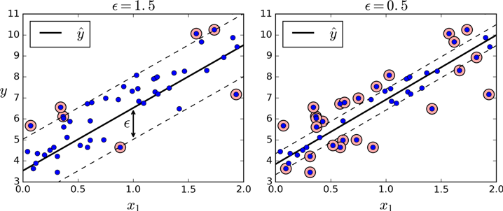
Decision Trees
One of the many qualities of Decision Trees is that they require very little data preparation. In particular, they don’t require feature scaling or centering at all. A Decision Tree can also estimate the probability that an instance belongs to a particular class k: first it traverses the tree to find the leaf node for this instance, and then it returns the ratio of training instances of class k in this node. For example, suppose you have found a flower whose petals are 5 cm long and 1.5 cm wide. The corresponding leaf node is the depth-2 left node, so the Decision Tree should output the following probabilities: 0% for Iris-Setosa (0/54), 90.7% for Iris-Versicolor (49/54), and 9.3% for Iris-Virginica (5/54). And of course if you ask it to predict the class, it should output Iris-Versicolor (class 1) since it has the highest probability. You can increase speed by pruning the tree with some threshold. More generally, the main issue with Decision Trees is that they are very sensitive to small variations in the training data.
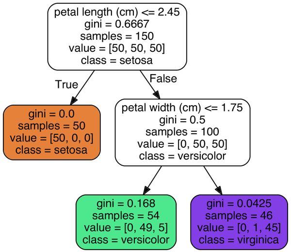
Regression with Decision Trees
Decision Trees are also capable of performing regression tasks. The main difference is that instead of predicting a class in each node, it predicts a value. For example, suppose you want to make a prediction for a new instance with x1 = 0.6. You traverse the tree starting at the root, and you eventually reach the leaf node that predicts value=0.1106. This prediction is simply the average target value of the 110 training instances associated to this leaf node. This prediction results in a Mean Squared Error (MSE) equal to 0.0151 over these 110 instances.
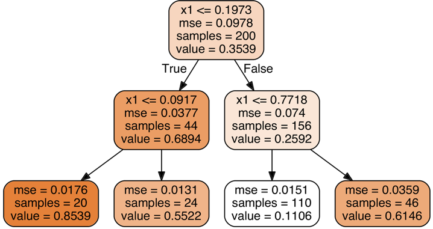
Ensemble Learning and Random Forests
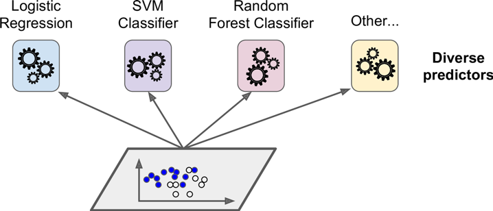
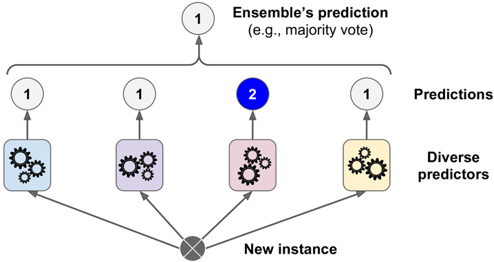
Train a group of Decision Tree classifiers, each on a different random subset of the training set. To make predictions, you just obtain the predictions of all individual trees, then predict the class that gets the most votes. Such an ensemble of Decision Trees is called a Random Forest.
A very simple way to create an even better classifier is to aggregate the predictions of each classifier and predict the class that gets the most votes. This majority-vote classifier is called a hard voting classifier.
Somewhat surprisingly, this voting classifier often achieves a higher accuracy than the best classifier in the ensemble. In fact, even if each classifier is a weak learner, the ensemble can still be a strong learner (achieving high accuracy), provided there are a sufficient number of weak learners and they are sufficiently diverse.
However, this is only true if all classifiers are perfectly independent, making uncorrelated errors, which is clearly not the case since they are trained on the same data. They are likely to make the same types of errors, so there will be many majority votes for the wrong class, reducing the ensemble’s accuracy.
Ensemble methods work best when the predictors are as independent from one another as possible. One way to get diverse classifiers is to train them using very different algorithms. This increases the chance that they will make very different types of errors, improving the ensemble’s accuracy.
Hard Voting classifier
Bagging and Pasting
One approach to get a diverse set of classifiers is to use the same training algorithm for every predictor, but to train them on different random subsets of the training set. When sampling is performed with replacement, this method is called bagging. When sampling is performed without replacement, it is called pasting.
Random Forests
Random Forest is an ensemble of Decision Trees, generally trained via the bagging method (or sometimes pasting).
Boosting
Boosting (originally called hypothesis boosting) refers to any Ensemble method that can combine several weak learners into a strong learner. The general idea of most boosting methods is to train predictors sequentially, each trying to correct its predecessor. There are many boosting methods available, but by far the most popular are AdaBoost(short for Adaptive Boosting) and Gradient Boosting.
AdaBoost
One way for a new predictor to correct its predecessor is to pay a bit more attention to the training instances that the predecessor underfitted. This results in new predictors focusing more and more on the hard cases. Once all predictors are trained, the ensemble makes predictions very much like bagging or pasting, except that predictors have different weights depending on their overall accuracy on the weighted training set. There is one important drawback to this sequential learning technique: it cannot be parallelized (or only partially), since each predictor can only be trained after the previous predictor has been trained and evaluated. As a result, it does not scale as well as bagging or pasting.
Gradient Boosting
Another very popular Boosting algorithm is Gradient Boosting. Just like AdaBoost, Gradient Boosting works by sequentially adding predictors to an ensemble, each one correcting its predecessor. However, instead of tweaking the instance weights at every iteration like AdaBoost does, this method tries to fit the new predictor to the residual errors made by the previous predictor.
Stacking
Stacking is based on a simple idea: instead of using trivial functions (such as hard voting) to aggregate the predictions of all predictors in an ensemble.
Now for each instance in the hold-out set there are three predicted values. We can create a new training set using these predicted values as input features (which makes this new training set three-dimensional), and keeping the target values. The blender is trained on this new training set, so it learns to predict the target value given the first layer’s predictions.
It is actually possible to train several different blenders this way (e.g., one using Lin‐ ear Regression, another using Random Forest Regression, and so on): we get a whole layer of blenders. The trick is to split the training set into three subsets: the first one is used to train the first layer, the second one is used to create the training set used to train the second layer (using predictions made by the predictors of the first layer), and the third one is used to create the training set to train the third layer (using predictions made by the predictors of the second layer). Once this is done, we can make a prediction for a new instance by going through each layer sequentially.
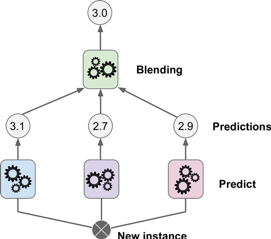
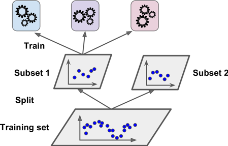
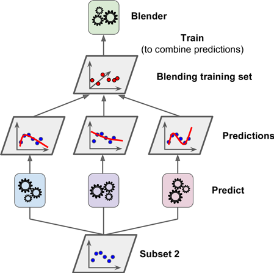
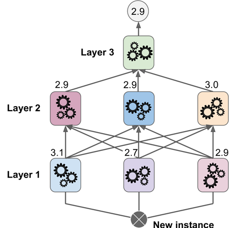
Figure1
Aggregating predictions using a blending predictor
Figure2
Training the first layer
Figure3
Training the blender
Figure4
Predictions in a multilayer stacking ensemble
Dimensionality Reduction
Three of the most popular dimensionality reduction techniques: PCA, Kernel PCA, and LLE.
The Curse of Dimensionality: In short, the more dimensions the training set has, the greater the risk of overfitting it.
Manifold Learning
The Swiss roll is an example of a 2D manifold. Put simply, a 2D manifold is a 2D shape that can be bent and twisted in a higher dimensional space. More generally, a d-dimensional manifold is a part of an n-dimensional space (where d < n) that locally resembles a d-dimensional hyperplane. In the case of the Swiss roll, d = 2 and n = 3: it locally resembles a 2D plane, but it is rolled in the third dimension.
Principal Component Analysis (PCA) is by far the most popular dimensionality reduction algorithm. First it identifies the hyperplane that lies closest to the data, and then it projects the data onto it.
It seems reasonable to select the axis that preserves the maximum amount of variance, as it will most likely lose less information than the other projections. Another way to justify this choice is that it is the axis that minimizes the mean squared distance between the original dataset and its projection onto that axis. This is the rather simple idea behind PCA.
Principal Components
PCA identifies the axis that accounts for the largest amount of variance in the training set.
Explained Variance Ratio
Another very useful piece of information is the explained variance ratio of each principal component, available via the explained_variance_ratio_ variable. It indicates the proportion of the dataset’s variance that lies along the axis of each principal component. This tells you that 84.2% of the dataset’s variance lies along the first axis, and 14.6% lies along the second axis. This leaves less than 1.2% for the third axis, so it is reason‐ able to assume that it probably carries little information.
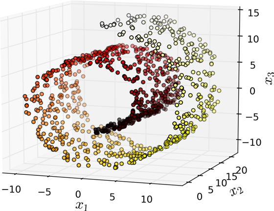
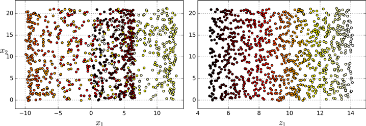
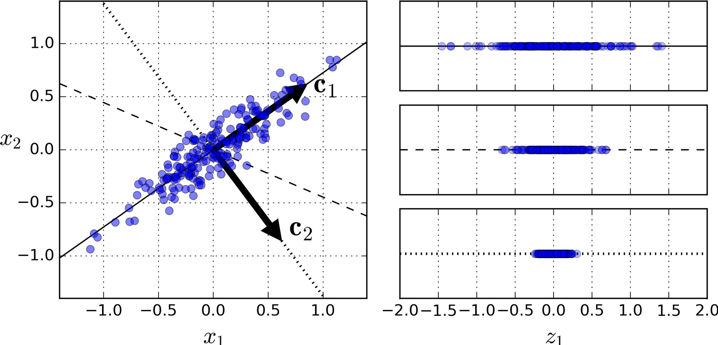
Choosing the Right Number of Dimensions
Instead of arbitrarily choosing the number of dimensions to reduce down to, it is generally preferable to choose the number of dimensions that add up to a sufficiently large portion of the variance (e.g., 95%). It is also possible to decompress the reduced dataset back to 784 dimensions by applying the inverse transformation of the PCA projection. Of course this won’t give you back the original data, since the projection lost a bit of information (within the 5% variance that was dropped), but it will likely be quite close to the original data. The mean squared distance between the original data and the reconstructed data (compressed and then decompressed) is called the reconstruction error.
Figure-PCA1:Explained variance as a function of the number of dimensions
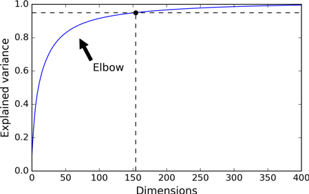
Incremental PCA
If the whole training set does not fit in memory to run SVD algorithm we can use Incremental PCA (IPCA) algorithms. You can split the training set into mini-batches and feed an IPCA algorithm one mini-batch at a time. This is useful for large training sets, and also to apply PCA online (i.e., on the fly, as new instances arrive).
Kernel PCA
Kernel trick implicitly maps instances into a very high-dimensional space (called the feature space), enabling nonlinear classification and regression with Support Vector Machines. Recall that a linear decision boundary in the high-dimensional feature space corresponds to a complex nonlinear decision boundary in the original space.
Kernel PCA figure:Swiss roll reduced to 2D using kPCA with various kernels.
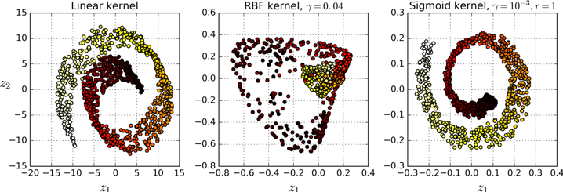
LLE
Locally Linear Embedding (LLE)8 is another very powerful nonlinear dimensionality reduction (NLDR) technique. It is a Manifold Learning technique that does not rely on projections like the previous algorithms. In a nutshell, LLE works by first measur‐ ing how each training instance linearly relates to its closest neighbors (c.n.), and then looking for a low-dimensional representation of the training set where these local relationships are best preserved (more details shortly). This makes it particularly good at unrolling twisted manifolds, especially when there is not too much noise.
LLE figure:Unrolled Swiss roll using LLE
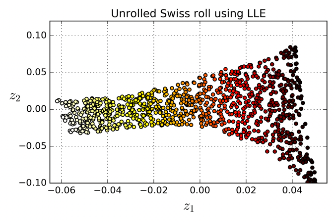
Questions and Answers
Exercises
In this chapter we have covered some of the most important concepts in Machine Learning. In the next chapters we will dive deeper and write more code, but before we do, make sure you know how to answer the following questions:
1. How would you define Machine Learning?
2. Can you name four types of problems where it shines?
3. What is a labeled training set?
4. What are the two most common supervised tasks?
5. Can you name four common unsupervised tasks?
6. What type of Machine Learning algorithm would you use to allow a robot to walk in various unknown terrains?
7. What type of algorithm would you use to segment your customers into multiple groups?
8. Would you frame the problem of spam detection as a supervised learning prob‐ lem or an unsupervised learning problem?
9. What is an online learning system?
10. What is out-of-core learning?
11. What type of learning algorithm relies on a similarity measure to make predic‐ tions?
12. What is the difference between a model parameter and a learning algorithm’s hyperparameter?
13. What do model-based learning algorithms search for? What is the most common strategy they use to succeed? How do they make predictions?
14. Can you name four of the main challenges in Machine Learning?
15. If your model performs great on the training data but generalizes poorly to new instances, what is happening? Can you name three possible solutions?
16. What is a test set and why would you want to use it?
17. What is the purpose of a validation set?
18. What can go wrong if you tune hyperparameters using the test set?
19. What is cross-validation and why would you prefer it to a validation set?
1. Machine Learning is about building systems that can learn from data. Learning means getting better at some task, given some performance measure.
2. Machine Learning is great for complex problems for which we have no algorith‐ mic solution, to replace long lists of hand-tuned rules, to build systems that adapt to fluctuating environments, and finally to help humans learn (e.g., data mining).
3. A labeled training set is a training set that contains the desired solution (a.k.a. a label) for each instance.
4. The two most common supervised tasks are regression and classification.
5. Common unsupervised tasks include clustering, visualization, dimensionality reduction, and association rule learning.
6. Reinforcement Learning is likely to perform best if we want a robot to learn to walk in various unknown terrains since this is typically the type of problem that Reinforcement Learning tackles. It might be possible to express the problem as a supervised or semisupervised learning problem, but it would be less natural.
7. If you don’t know how to define the groups, then you can use a clustering algo‐ rithm (unsupervised learning) to segment your customers into clusters of similar customers. However, if you know what groups you would like to have, then you
can feed many examples of each group to a classification algorithm (supervised learning), and it will classify all your customers into these groups.
8. Spam detection is a typical supervised learning problem: the algorithm is fed many emails along with their label (spam or not spam).
9. An online learning system can learn incrementally, as opposed to a batch learn‐ ing system. This makes it capable of adapting rapidly to both changing data and autonomous systems, and of training on very large quantities of data.
10. Out-of-core algorithms can handle vast quantities of data that cannot fit in a computer’s main memory. An out-of-core learning algorithm chops the data into mini-batches and uses online learning techniques to learn from these mini- batches.
11. An instance-based learning system learns the training data by heart; then, when given a new instance, it uses a similarity measure to find the most similar learned instances and uses them to make predictions.
12. A model has one or more model parameters that determine what it will predict given a new instance (e.g., the slope of a linear model). A learning algorithm tries to find optimal values for these parameters such that the model generalizes well to new instances. A hyperparameter is a parameter of the learning algorithm itself, not of the model (e.g., the amount of regularization to apply).
13. Model-based learning algorithms search for an optimal value for the model parameters such that the model will generalize well to new instances. We usually train such systems by minimizing a cost function that measures how bad the sys‐ tem is at making predictions on the training data, plus a penalty for model com‐ plexity if the model is regularized. To make predictions, we feed the new instance’s features into the model’s prediction function, using the parameter val‐ ues found by the learning algorithm.
14. Some of the main challenges in Machine Learning are the lack of data, poor data quality, nonrepresentative data, uninformative features, excessively simple mod‐ els that underfit the training data, and excessively complex models that overfit the data.
15. If a model performs great on the training data but generalizes poorly to new instances, the model is likely overfitting the training data (or we got extremely lucky on the training data). Possible solutions to overfitting are getting more data, simplifying the model (selecting a simpler algorithm, reducing the number of parameters or features used, or regularizing the model), or reducing the noise in the training data.
16. A test set is used to estimate the generalization error that a model will make on new instances, before the model is launched in production.
472 | Appendix A: Exercise Solutions
17. A validation set is used to compare models. It makes it possible to select the best model and tune the hyperparameters.
18. If you tune hyperparameters using the test set, you risk overfitting the test set, and the generalization error you measure will be optimistic (you may launch a model that performs worse than you expect).
19. Cross-validation is a technique that makes it possible to compare models (for model selection and hyperparameter tuning) without the need for a separate vali‐ dation set. This saves precious training data.
Exercises
1. What Linear Regression training algorithm can you use if you have a training set with millions of features?
2. Suppose the features in your training set have very different scales. What algo‐ rithms might suffer from this, and how? What can you do about it?
3. Can Gradient Descent get stuck in a local minimum when training a Logistic Regression model?
4. Do all Gradient Descent algorithms lead to the same model provided you let them run long enough?
5. Suppose you use Batch Gradient Descent and you plot the validation error at every epoch. If you notice that the validation error consistently goes up, what is likely going on? How can you fix this?
6. Is it a good idea to stop Mini-batch Gradient Descent immediately when the vali‐ dation error goes up?
7. Which Gradient Descent algorithm (among those we discussed) will reach the vicinity of the optimal solution the fastest? Which will actually converge? How can you make the others converge as well?
8. Suppose you are using Polynomial Regression. You plot the learning curves and you notice that there is a large gap between the training error and the validation error. What is happening? What are three ways to solve this?
9. Suppose you are using Ridge Regression and you notice that the training error and the validation error are almost equal and fairly high. Would you say that the model suffers from high bias or high variance? Should you increase the regulari‐ zation hyperparameter α or reduce it?
10. Why would you want to use:
• Ridge Regression instead of Linear Regression?
• Lasso instead of Ridge Regression?
• Elastic Net instead of Lasso?
11. Suppose you want to classify pictures as outdoor/indoor and daytime/nighttime. Should you implement two Logistic Regression classifiers or one Softmax Regres‐ sion classifier?
12. Implement Batch Gradient Descent with early stopping for Softmax Regression (without using Scikit-Learn).
1. If you have a training set with millions of features you can use Stochastic Gradi‐ ent Descent or Mini-batch Gradient Descent, and perhaps Batch Gradient Descent if the training set fits in memory. But you cannot use the Normal Equa‐ tion because the computational complexity grows quickly (more than quadrati‐ cally) with the number of features.
2. If the features in your training set have very different scales, the cost function will have the shape of an elongated bowl, so the Gradient Descent algorithms will take a long time to converge. To solve this you should scale the data before training the model. Note that the Normal Equation will work just fine without scaling.
3. Gradient Descent cannot get stuck in a local minimum when training a Logistic Regression model because the cost function is convex.1
4. If the optimization problem is convex (such as Linear Regression or Logistic Regression), and assuming the learning rate is not too high, then all Gradient Descent algorithms will approach the global optimum and end up producing fairly similar models. However, unless you gradually reduce the learning rate, Stochastic GD and Mini-batch GD will never truly converge; instead, they will keep jumping back and forth around the global optimum. This means that even if you let them run for a very long time, these Gradient Descent algorithms will produce slightly different models.
5. If the validation error consistently goes up after every epoch, then one possibility is that the learning rate is too high and the algorithm is diverging. If the training error also goes up, then this is clearly the problem and you should reduce the learning rate. However, if the training error is not going up, then your model is overfitting the training set and you should stop training.
6. Due to their random nature, neither Stochastic Gradient Descent nor Mini-batch Gradient Descent is guaranteed to make progress at every single training itera‐ tion. So if you immediately stop training when the validation error goes up, you may stop much too early, before the optimum is reached. A better option is to save the model at regular intervals, and when it has not improved for a long time (meaning it will probably never beat the record), you can revert to the best saved model.
7. Stochastic Gradient Descent has the fastest training iteration since it considers only one training instance at a time, so it is generally the first to reach the vicinity of the global optimum (or Mini-batch GD with a very small mini-batch size). However, only Batch Gradient Descent will actually converge, given enough training time. As mentioned, Stochastic GD and Mini-batch GD will bounce around the optimum, unless you gradually reduce the learning rate.
8. If the validation error is much higher than the training error, this is likely because your model is overfitting the training set. One way to try to fix this is to reduce the polynomial degree: a model with fewer degrees of freedom is less likely to overfit. Another thing you can try is to regularize the model—for example, by adding an l2 penalty (Ridge) or an l1 penalty (Lasso) to the cost function. This will also reduce the degrees of freedom of the model. Lastly, you can try to increase the size of the training set.
9. If both the training error and the validation error are almost equal and fairly high, the model is likely underfitting the training set, which means it has a high bias. You should try reducing the regularization hyperparameter α.
10. Let’s see:
1. A model with some regularization typically performs better than a model without any regularization, so you should generally prefer Ridge Regression over plain Linear Regression.2
2. Lasso Regression uses an l1 penalty, which tends to push the weights down to exactly zero. This leads to sparse models, where all weights are zero except for
the most important weights. This is a way to perform feature selection auto‐ matically, which is good if you suspect that only a few features actually matter. When you are not sure, you should prefer Ridge Regression.
• Elastic Net is generally preferred over Lasso since Lasso may behave erratically in some cases (when several features are strongly correlated or when there are more features than training instances). However, it does add an extra hyper‐ parameter to tune. If you just want Lasso without the erratic behavior, you can just use Elastic Net with an l1_ratio close to 1.
11. If you want to classify pictures as outdoor/indoor and daytime/nighttime, since these are not exclusive classes (i.e., all four combinations are possible) you should train two Logistic Regression classifiers.
1. What is the fundamental idea behind Support Vector Machines?
2. What is a support vector?
3. Why is it important to scale the inputs when using SVMs?
4. Can an SVM classifier output a confidence score when it classifies an instance? What about a probability?
5. Should you use the primal or the dual form of the SVM problem to train a model on a training set with millions of instances and hundreds of features?
6. Say you trained an SVM classifier with an RBF kernel. It seems to underfit the training set: should you increase or decrease γ (gamma)? What about C?
7. How should you set the QP parameters (H, f, A, and b) to solve the soft margin linear SVM classifier problem using an off-the-shelf QP solver?
8. Train a LinearSVC on a linearly separable dataset. Then train an SVC and a SGDClassifier on the same dataset. See if you can get them to produce roughly the same model.
9. Train an SVM classifier on the MNIST dataset. Since SVM classifiers are binary classifiers, you will need to use one-versus-all to classify all 10 digits. You may want to tune the hyperparameters using small validation sets to speed up the pro‐ cess. What accuracy can you reach?
10. 10. Train an SVM regressor on the California housing dataset.
1. The fundamental idea behind Support Vector Machines is to fit the widest possi‐ ble “street” between the classes. In other words, the goal is to have the largest pos‐ sible margin between the decision boundary that separates the two classes and the training instances. When performing soft margin classification, the SVM searches for a compromise between perfectly separating the two classes and hav‐ ing the widest possible street (i.e., a few instances may end up on the street). Another key idea is to use kernels when training on nonlinear datasets.
2. After training an SVM, a support vector is any instance located on the “street” (see the previous answer), including its border. The decision boundary is entirely determined by the support vectors. Any instance that is not a support vector (i.e., off the street) has no influence whatsoever; you could remove them, add more instances, or move them around, and as long as they stay off the street they won’t affect the decision boundary. Computing the predictions only involves the sup‐ port vectors, not the whole training set.
3. SVMs try to fit the largest possible “street” between the classes (see the first answer), so if the training set is not scaled, the SVM will tend to neglect small features (see Figure 5-2).
4. An SVM classifier can output the distance between the test instance and the deci‐ sion boundary, and you can use this as a confidence score. However, this score cannot be directly converted into an estimation of the class probability. If you set probability=True when creating an SVM in Scikit-Learn, then after training it will calibrate the probabilities using Logistic Regression on the SVM’s scores (trained by an additional five-fold cross-validation on the training data). This will add the predict_proba() and predict_log_proba() methods to the SVM.
Exercises
1. What is the approximate depth of a Decision Tree trained (without restrictions) on a training set with 1 million instances?
2. Is a node’s Gini impurity generally lower or greater than its parent’s? Is it gener‐ ally lower/greater, or always lower/greater?
3. If a Decision Tree is overfitting the training set, is it a good idea to try decreasing max_depth?
4. If a Decision Tree is underfitting the training set, is it a good idea to try scaling the input features?
5. If it takes one hour to train a Decision Tree on a training set containing 1 million instances, roughly how much time will it take to train another Decision Tree on a training set containing 10 million instances?
6. If your training set contains 100,000 instances, will setting presort=True speed up training?
7. Train and fine-tune a Decision Tree for the moons dataset.
1. Generate a moons dataset using make_moons(n_samples=10000, noise=0.4).
2. Split it into a training set and a test set using train_test_split().
c. Use grid search with cross-validation (with the help of the GridSearchCV class) to find good hyperparameter values for a DecisionTreeClassifier. Hint: try various values for max_leaf_nodes.
d. Train it on the full training set using these hyperparameters, and measure your model’s performance on the test set. You should get roughly 85% to 87% accuracy.
8. Grow a forest.
1. Continuing the previous exercise, generate 1,000 subsets of the training set, each containing 100 instances selected randomly. Hint: you can use Scikit- Learn’s ShuffleSplit class for this.
2. Train one Decision Tree on each subset, using the best hyperparameter values found above. Evaluate these 1,000 Decision Trees on the test set. Since they were trained on smaller sets, these Decision Trees will likely perform worse than the first Decision Tree, achieving only about 80% accuracy.
3. Now comes the magic. For each test set instance, generate the predictions of the 1,000 Decision Trees, and keep only the most frequent prediction (you can use SciPy’s mode() function for this). This gives you majority-vote predictions over the test set.
4. Evaluate these predictions on the test set: you should obtain a slightly higher accuracy than your first model (about 0.5 to 1.5% higher). Congratulations, you have trained a Random Forest classifier!
1. The depth of a well-balanced binary tree containing m leaves is equal to log2(m)3, rounded up. A binary Decision Tree (one that makes only binary decisions, as is the case of all trees in Scikit-Learn) will end up more or less well balanced at the end of training, with one leaf per training instance if it is trained without restric‐ tions. Thus, if the training set contains one million instances, the Decision Tree will have a depth of log2(106) ≈ 20 (actually a bit more since the tree will generally not be perfectly well balanced).
2. A node’s Gini impurity is generally lower than its parent’s. This is ensured by the CART training algorithm’s cost function, which splits each node in a way that minimizes the weighted sum of its children’s Gini impurities. However, if one child is smaller than the other, it is possible for it to have a higher Gini impurity than its parent, as long as this increase is more than compensated for by a decrease of the other child’s impurity. For example, consider a node containing
four instances of class A and 1 of class B. Its Gini impurity is 1 − 12 − 42 = 0.32. 55
Now suppose the dataset is one-dimensional and the instances are lined up in the following order: A, B, A, A, A. You can verify that the algorithm will split this node after the second instance, producing one child node with instances A, B, and the other child node with instances A, A, A. The first child node’s Gini
impurity is 1 − 1 2 − 1 2 = 0.5, which is higher than its parent. This is compensated 22
for by the fact that the other node is pure, so the overall weighted Gini impurity is 25 × 0.5 + 35 × 0 = 0.2 , which is lower than the parent’s Gini impurity.
3. If a Decision Tree is overfitting the training set, it may be a good idea to decrease max_depth, since this will constrain the model, regularizing it.
4. Decision Trees don’t care whether or not the training data is scaled or centered; that’s one of the nice things about them. So if a Decision Tree underfits the train‐ ing set, scaling the input features will just be a waste of time.
5. The computational complexity of training a Decision Tree is O(n × m log(m)). So if you multiply the training set size by 10, the training time will be multiplied by K = (n × 10m × log(10m)) / (n × m × log(m)) = 10 × log(10m) / log(m). If m = 106, then K ≈ 11.7, so you can expect the training time to be roughly 11.7 hours.
6. Presorting the training set speeds up training only if the dataset is smaller than a few thousand instances. If it contains 100,000 instances, setting presort=True will considerably slow down training.
1. If you have trained five different models on the exact same training data, and they all achieve 95% precision, is there any chance that you can combine these models to get better results? If so, how? If not, why?
2. What is the difference between hard and soft voting classifiers?
3. Is it possible to speed up training of a bagging ensemble by distributing it across multiple servers? What about pasting ensembles, boosting ensembles, random forests, or stacking ensembles?
4. What is the benefit of out-of-bag evaluation?
5. What makes Extra-Trees more random than regular Random Forests? How can this extra randomness help? Are Extra-Trees slower or faster than regular Ran‐ dom Forests?
6. If your AdaBoost ensemble underfits the training data, what hyperparameters should you tweak and how?
7. If your Gradient Boosting ensemble overfits the training set, should you increase or decrease the learning rate?
8. Load the MNIST data (introduced in Chapter 3), and split it into a training set, a validation set, and a test set (e.g., use the first 40,000 instances for training, the next 10,000 for validation, and the last 10,000 for testing). Then train various classifiers, such as a Random Forest classifier, an Extra-Trees classifier, and an SVM. Next, try to combine them into an ensemble that outperforms them all on the validation set, using a soft or hard voting classifier. Once you have found one, try it on the test set. How much better does it perform compared to the individ‐ ual classifiers?
9. Run the individual classifiers from the previous exercise to make predictions on the validation set, and create a new training set with the resulting predictions: each training instance is a vector containing the set of predictions from all your classifiers for an image, and the target is the image’s class. Congratulations, you have just trained a blender, and together with the classifiers they form a stacking ensemble! Now let’s evaluate the ensemble on the test set. For each image in the test set, make predictions with all your classifiers, then feed the predictions to the blender to get the ensemble’s predictions. How does it compare to the voting clas‐ sifier you trained earlier?
1. If you have trained five different models and they all achieve 95% precision, you can try combining them into a voting ensemble, which will often give you even better results. It works better if the models are very different (e.g., an SVM classi‐ fier, a Decision Tree classifier, a Logistic Regression classifier, and so on). It is even better if they are trained on different training instances (that’s the whole point of bagging and pasting ensembles), but if not it will still work as long as the models are very different.
2. A hard voting classifier just counts the votes of each classifier in the ensemble and picks the class that gets the most votes. A soft voting classifier computes the average estimated class probability for each class and picks the class with the highest probability. This gives high-confidence votes more weight and often per‐ forms better, but it works only if every classifier is able to estimate class probabil‐ ities (e.g., for the SVM classifiers in Scikit-Learn you must set probability=True).
3. It is quite possible to speed up training of a bagging ensemble by distributing it across multiple servers, since each predictor in the ensemble is independent of the others. The same goes for pasting ensembles and Random Forests, for the same reason. However, each predictor in a boosting ensemble is built based on the previous predictor, so training is necessarily sequential, and you will not gain anything by distributing training across multiple servers. Regarding stacking ensembles, all the predictors in a given layer are independent of each other, so they can be trained in parallel on multiple servers. However, the predictors in one layer can only be trained after the predictors in the previous layer have all been trained.
4. With out-of-bag evaluation, each predictor in a bagging ensemble is evaluated using instances that it was not trained on (they were held out). This makes it pos‐ sible to have a fairly unbiased evaluation of the ensemble without the need for an additional validation set. Thus, you have more instances available for training, and your ensemble can perform slightly better.
5. When you are growing a tree in a Random Forest, only a random subset of the features is considered for splitting at each node. This is true as well for Extra- Trees, but they go one step further: rather than searching for the best possible thresholds, like regular Decision Trees do, they use random thresholds for each feature. This extra randomness acts like a form of regularization: if a Random Forest overfits the training data, Extra-Trees might perform better. Moreover, since Extra-Trees don’t search for the best possible thresholds, they are much faster to train than Random Forests. However, they are neither faster nor slower than Random Forests when making predictions.
6. If your AdaBoost ensemble underfits the training data, you can try increasing the number of estimators or reducing the regularization hyperparameters of the base estimator. You may also try slightly increasing the learning rate.
7. If your Gradient Boosting ensemble overfits the training set, you should try decreasing the learning rate. You could also use early stopping to find the right number of predictors (you probably have too many).
1. Exercises
1. What are the main motivations for reducing a dataset’s dimensionality? What are the main drawbacks?
2. What is the curse of dimensionality?
3. Once a dataset’s dimensionality has been reduced, is it possible to reverse the operation? If so, how? If not, why?
4. Can PCA be used to reduce the dimensionality of a highly nonlinear dataset?
5. Suppose you perform PCA on a 1,000-dimensional dataset, setting the explained variance ratio to 95%. How many dimensions will the resulting dataset have?
2. In what cases would you use vanilla PCA, Incremental PCA, Randomized PCA, or Kernel PCA?
3. How can you evaluate the performance of a dimensionality reduction algorithm on your dataset?
4. Does it make any sense to chain two different dimensionality reduction algo‐ rithms?
5. Load the MNIST dataset (introduced in Chapter 3) and split it into a training set and a test set (take the first 60,000 instances for training, and the remaining 10,000 for testing). Train a Random Forest classifier on the dataset and time how long it takes, then evaluate the resulting model on the test set. Next, use PCA to reduce the dataset’s dimensionality, with an explained variance ratio of 95%. Train a new Random Forest classifier on the reduced dataset and see how long it takes. Was training much faster? Next evaluate the classifier on the test set: how does it compare to the previous classifier?
6. Use t-SNE to reduce the MNIST dataset down to two dimensions and plot the result using Matplotlib. You can use a scatterplot using 10 different colors to rep‐ resent each image’s target class. Alternatively, you can write colored digits at the location of each instance, or even plot scaled-down versions of the digit images themselves (if you plot all digits, the visualization will be too cluttered, so you should either draw a random sample or plot an instance only if no other instance has already been plotted at a close distance). You should get a nice visualization with well-separated clusters of digits. Try using other dimensionality reduction algorithms such as PCA, LLE, or MDS and compare the resulting visualizations.
1. Motivations and drawbacks:
• The main motivations for dimensionality reduction are:
— To speed up a subsequent training algorithm (in some cases it may even remove noise and redundant features, making the training algorithm per‐ form better).
— To visualize the data and gain insights on the most important features.
— Simply to save space (compression).
• The main drawbacks are:
— Some information is lost, possibly degrading the performance of subse‐ quent training algorithms.
— It can be computationally intensive.
— It adds some complexity to your Machine Learning pipelines.
— Transformed features are often hard to interpret.
2. The curse of dimensionality refers to the fact that many problems that do not exist in low-dimensional space arise in high-dimensional space. In Machine Learning, one common manifestation is the fact that randomly sampled high- dimensional vectors are generally very sparse, increasing the risk of overfitting and making it very difficult to identify patterns in the data without having plenty of training data.
3. Once a dataset’s dimensionality has been reduced using one of the algorithms we discussed, it is almost always impossible to perfectly reverse the operation, because some information gets lost during dimensionality reduction. Moreover, while some algorithms (such as PCA) have a simple reverse transformation pro‐ cedure that can reconstruct a dataset relatively similar to the original, other algo‐ rithms (such as T-SNE) do not.
4. PCA can be used to significantly reduce the dimensionality of most datasets, even if they are highly nonlinear, because it can at least get rid of useless dimensions. However, if there are no useless dimensions—for example, the Swiss roll—then reducing dimensionality with PCA will lose too much information. You want to unroll the Swiss roll, not squash it.
5. That’s a trick question: it depends on the dataset. Let’s look at two extreme exam‐ ples. First, suppose the dataset is composed of points that are almost perfectly aligned. In this case, PCA can reduce the dataset down to just one dimension while still preserving 95% of the variance. Now imagine that the dataset is com‐ posed of perfectly random points, scattered all around the 1,000 dimensions. In
Exercise Solutions | 479
this case all 1,000 dimensions are required to preserve 95% of the variance. So the answer is, it depends on the dataset, and it could be any number between 1 and 1,000. Plotting the explained variance as a function of the number of dimensions is one way to get a rough idea of the dataset’s intrinsic dimensionality.
6. Regular PCA is the default, but it works only if the dataset fits in memory. Incre‐ mental PCA is useful for large datasets that don’t fit in memory, but it is slower than regular PCA, so if the dataset fits in memory you should prefer regular PCA. Incremental PCA is also useful for online tasks, when you need to apply PCA on the fly, every time a new instance arrives. Randomized PCA is useful when you want to considerably reduce dimensionality and the dataset fits in memory; in this case, it is much faster than regular PCA. Finally, Kernel PCA is useful for nonlinear datasets.
7. Intuitively, a dimensionality reduction algorithm performs well if it eliminates a lot of dimensions from the dataset without losing too much information. One way to measure this is to apply the reverse transformation and measure the reconstruction error. However, not all dimensionality reduction algorithms pro‐ vide a reverse transformation. Alternatively, if you are using dimensionality reduction as a preprocessing step before another Machine Learning algorithm (e.g., a Random Forest classifier), then you can simply measure the performance of that second algorithm; if dimensionality reduction did not lose too much information, then the algorithm should perform just as well as when using the original dataset.
8. It can absolutely make sense to chain two different dimensionality reduction algorithms. A common example is using PCA to quickly get rid of a large num‐ ber of useless dimensions, then applying another much slower dimensionality reduction algorithm, such as LLE. This two-step approach will likely yield the same performance as using LLE only, but in a fraction of the time.